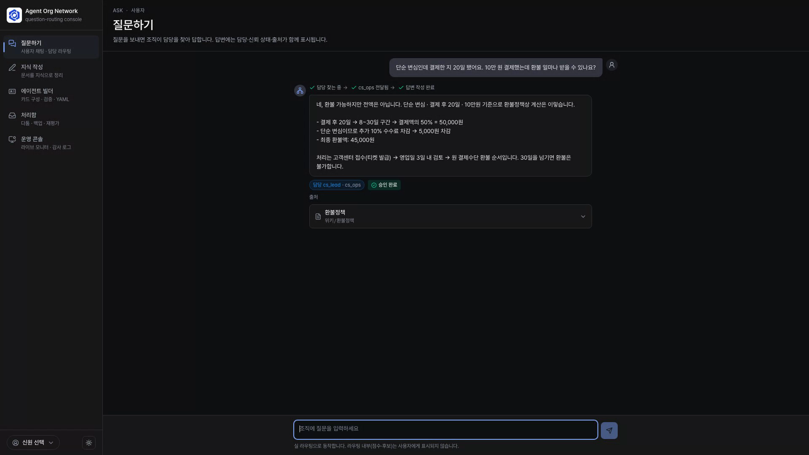

실 화면 시연 · 라이브 녹화
“이건 누구한테 물어봐야 하지?”
조직의 지식은 문서가 아니라 사람에게 있습니다. 담당자를 찾아 헤매는 시간을 없애는 것 — 이 시스템의 출발점입니다.
이후 모든 화면은 실제 동작 중인 제품을 그대로 녹화한 것입니다

실측으로 증명
실제 법령 데이터 72문항으로 측정했습니다
2.6×
라우팅 정확도 개선
20.8% → 54.2% · 동일 시험셋
1.4%
오답이 그대로 나가는 비율
15.3%에서 1/11로 — 가장 해로운 실패를 우선 차단
학습 루프 — 모호한 질문은 사람의 합의로 넘기고, 합의는 판례로 쌓여 다음부터 자동 라우팅됩니다.
AGENT ORG NETWORK
Agent Org Network.
조직의 지식이, 조직의 답이 되도록.
자동 검증 2,210건 통과 · 실기기 2대 실네트워크 관통 · 실측 리포트 공개
LIVE사용자 채팅 — 질문이 담당을 찾아갑니다
LIVE다툼 → 합의 → 판례 학습
LIVE안전 장치 — 거절과 이관
LIVE운영자 콘솔 — 실시간 관전 피드
LIVE담당자 화면 — 초안 검토·수정·승인
“단순 변심인데 결제한 지 20일 됐어요. 10만 원 결제했는데 환불 얼마나 받을 수 있나요?”
질문을 던지면 조직 그래프에서 담당을 찾아 연결하고, 담당 에이전트가 실제 규정 문서를 읽고 계산까지 마친 답을 내놓습니다. 근거 없는 답은 하지 않습니다.
담당이 겹치는 질문은 함부로 답하지 않습니다. 시스템이 다툼으로 표시하고, 사람의 판단을 기다립니다.
담당자가 처리함에서 담당을 지정하면 그 합의는 판례로 저장됩니다. 같은 질문이 다시 오면, 이제 사람 없이 즉시 연결됩니다.
권한 밖 요청은 정중히 거절하고, 담당이 없는 질문은 책임자에게 이관합니다. 모르면서 아는 척하지 않습니다.
운영자는 질문 인입부터 담당 결정까지, 모든 흐름을 실시간으로 지켜봅니다.
민감한 답은 사람이 마지막을 지킵니다. 담당자가 초안을 검토하고 직접 고쳐 승인해야 나갑니다 — 실제 담당자 PC 화면입니다.